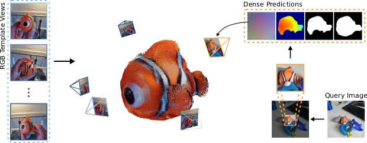
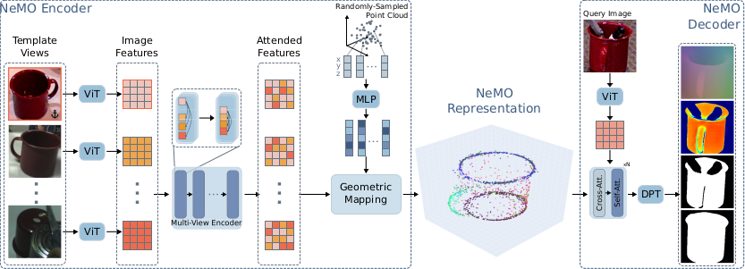
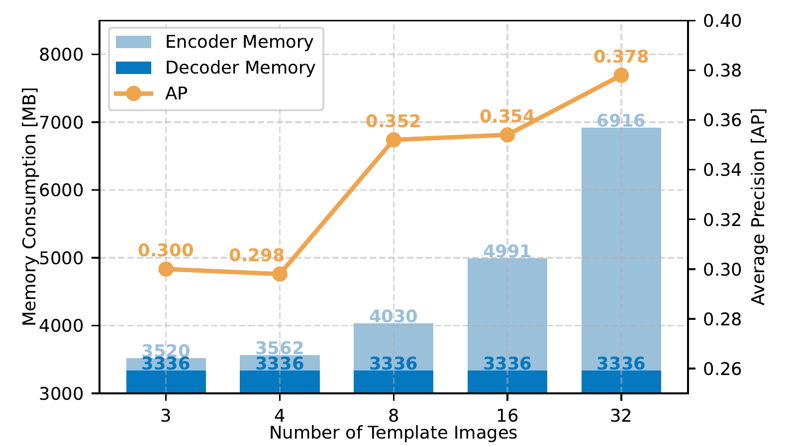

We present Neural Memory Object (NeMO), a novel object-centric representation that can be used to detect, segment and estimate the 6DoF pose of objects unseen during training using RGB images. Our method consists of an encoder that requires only a few RGB template views depicting an object to generate a sparse object-like point cloud using a learned UDF containing semantic and geometric information. Next, a decoder takes the object encoding together with a query image to generate a variety of dense predictions. Through extensive experiments, we show that our method can be used for few-shot object perception without requiring any camera-specific parameters or retraining on target data. Our proposed concept of outsourcing object information in a NeMO and using a single network for multiple perception tasks enhances interaction with novel objects, improving scalability and efficiency by enabling quick object onboarding without retraining or extensive pre-processing. We report competitive and state-of-the-art results on various datasets and perception tasks of the BOP benchmark, demonstrating the versatility of our approach.
Our novel encoder combines the information stored in a set of template images into a unified, geometrically understandable representation.

Having an explicit object representation comes with many benefits:
The explicit nature of the NeMO representation allows direct manipulation of the encoded object geometry, enabling continuous improvements of the decoder predictions:
While the memory consumption of the encoder increases with the number of template images, the decoder has a constant memory footprint.

Without any finetuning, our method can be used on a variety of objects never seen during training. From capturing some template images to getting a 6D pose in just seconds, our method opens the door to scalable and efficient object perception.